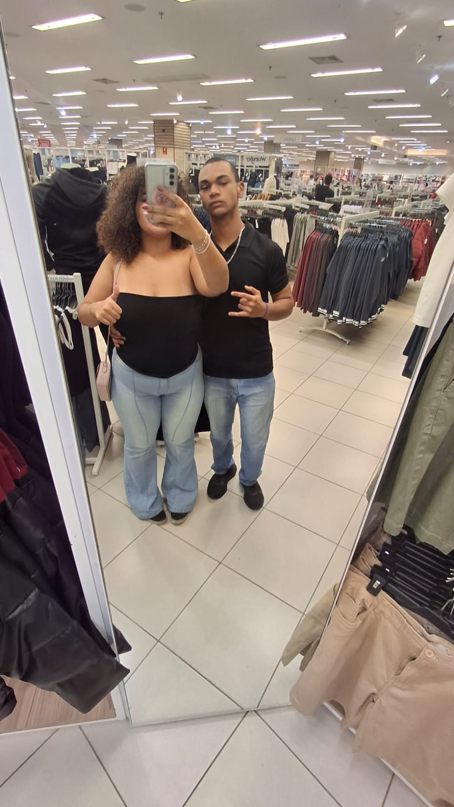
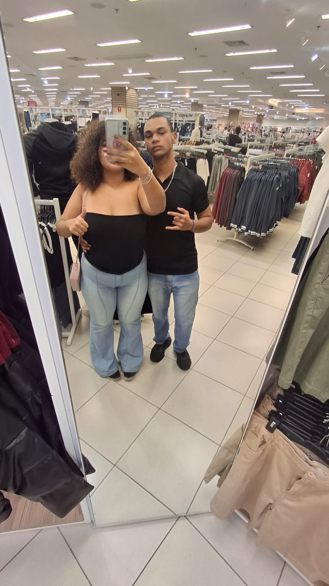

Minha Cartinha
feliz dia dos namorados, amor, princesa, pretinha, nega, amorzão da mnh vd. üñ§
Sério... Cê ñ tem ideia do qt eu tô feliz de tá vivendo isso cntg. Tipo... Às vzs eu paro pra pensar, olho
pra nossa história, olho pra tu, e fico tipo "carai mano... Olha onde a gnt tá, olha td q a gnt já fez
juntos, olha quem tá do meu lado..." E aí vem aquele sentimento absurdo de gratidão, amor, carinho, vontade
de
cuidar, de proteger, de amar cada vez mais.
Cê sabe, amor... Ñ tem um dia, nem um só segundo q eu ñ pense em tu. Cê tá na mnh mente o tempo td. Acordo
pensando em tu, passo o dia pensando em tu, durmo pensando em tu. Às vzs até sem perceber, sabe? só vem
aquele pensamento aleatório, tipo "tomara q ela esteja bem agora", "será q ela já comeu?", "será q ela tá
feliz?", "será q ela sabe o qt eu amo ela?".
Cada coisinha tua me encanta, amor. Teu sorriso, teu jeito de falar, tua voz, teu olhar, teus detalhes, tua
vibe, tuas manias, tuas bobeiras, teu jeitinho de cuidar, de se preocupar, de amar... Pqp, é mto surreal. Às
vzs fico te olhando, ouvindo tu falar, rindo, e penso "meu deus, como pode essa mulher ser tão perfeita?"
sério, ñ faz sentido kkkk.
E vdd seja dita... Tu é um dos presentes mais lindos, mais preciosos, mais fodas q a vida já me deu. Antes
de tu chegar, eu ñ fazia ideia de q dava pra amar alguém assim, desse jeito tão forte, tão intenso, tão
absurdo. Amor, tu virou mnh base, mnh paz, meu lar, mnh td. É cntg q eu quero td, é cntg q eu quero viver
td, passar
por td, construir td.
Sabe... Às vzs fico lembrando dos momentos engraçados, dos cincos rolês sksks, das conversas, das zoeiras,
das besteiras q a gnt já
viveu, e meu peito até aperta de tanto amor q sinto. Cada memória cntg é tipo um tesouro guardado dentro de
mim. Desde aquele papo bobo no whats, até aquele abraço apertado de qnd o mundo parece meio pesado, meio
chato... Mas aí cê chega e td fica leve, td faz sentido, td vale a pena.
E olha... Ñ é metendo o louco ñ, amor. Eu te amo pra crlh. Tipo, te amo mais q td. Te amo de um jeito q nem
sei se é normal kksskssk. É coisa de alma, coisa de conexão, coisa q vem lá de dentro, lá do fundo. Te amo
nas
risada, te amo nas brisa, te amo nos dias bons, nos dias ruins, nos corre, no descanso, no rolê, na
preguiça, na cama, no sofá, na vida. Te amo em td, te amo por td, te amo pq tu é tu.
E cê sabe, amor... Qnd falo q te amo, ñ é da boca pra fora. É sentimento puro, sincero, verdadeiro. É amor
de vdd, é amor q ñ acaba, q ñ some, q ñ diminui, q só cresce, só fortalece, só se multiplica. Cada dia q
passa, te amo mais. Cada segundo cntg é tipo um café forte e quente no friozin
Princesa, cê é foda. Tu é incrível. Tu é absurda. Tu é uma mulher maravilhosa, cheia de
luz, cheia de amor, cheia de tudo de bom. Cê tem um coração q ñ cabe dentro do peito. Cê tem um jeitinho
único, q só tu tem, e é exatamente isso q faz eu te amar cada vez mais. Tu ñ precisa mudar absolutamente
nada, pq
tu é perfeita do jeitinho q é.
E ó... Quero q cê saiba, sem sombra de dúvida, sem medo, sem insegurança, sem nada... Q eu tô cntg. Tô cntg
pra td. Tô cntg pra somar, pra crescer, pra evoluir, pra rir, pra chorar, pra viver. Eu escolho tu todo
santo dia. E escolho de olhos fechados, sem pensar duas vzs, pq é tu. Sempre foi tu. Sempre vai ser tu.
Amor, tu é mnh vd. Tu é meu amor maior, meu amor pra vida toda, meu presente mais lindo. E se depender de
mim, cê vai ser a mulher mais amada, mais mimada, mais cuidada, mais protegida, mais feliz desse mundo. Pq
tu merece td, amor. Tu merece o mundo, tu merece o universo inteiro, e se eu pudesse, te dava (o universo, obv skks).
Eu prometo, de coração, q nunca vou soltar tua mão. Nunca vou te deixar sozinha. Nunca vou deixar tu se
sentir sozinha. Nunca vou deixar faltar amor, carinho, cuidado, atenção, parceria, presença. Eu tô cntg,
amor. Tô cntg hj, amanhã, e pra smp. É nóis, lado a lado, peito colado, alma grudada, vida
entrelaçada.
Preta, te amo mais q td nesse mundo. mais q palavra nenhuma consegue descrever. mais q qlqr coisa q já
senti na vida. Te amo infinito, te amo além, te amo sem limites, te amo sem fim. Te amo de um jeito q é só
tu. Só tu entende, só tu sente, só tu sabe.
Feliz nosso dia, amor. Obg por ser td q tu é. Obg por existir. Obg por me escolher. Obg
por me amar. Obg por ser essa ser humana incrível, absurda, maravilhosa q tu é. Te amo mais q td,
princesa, amorzão da mnh vd. üñ§üî•
 
